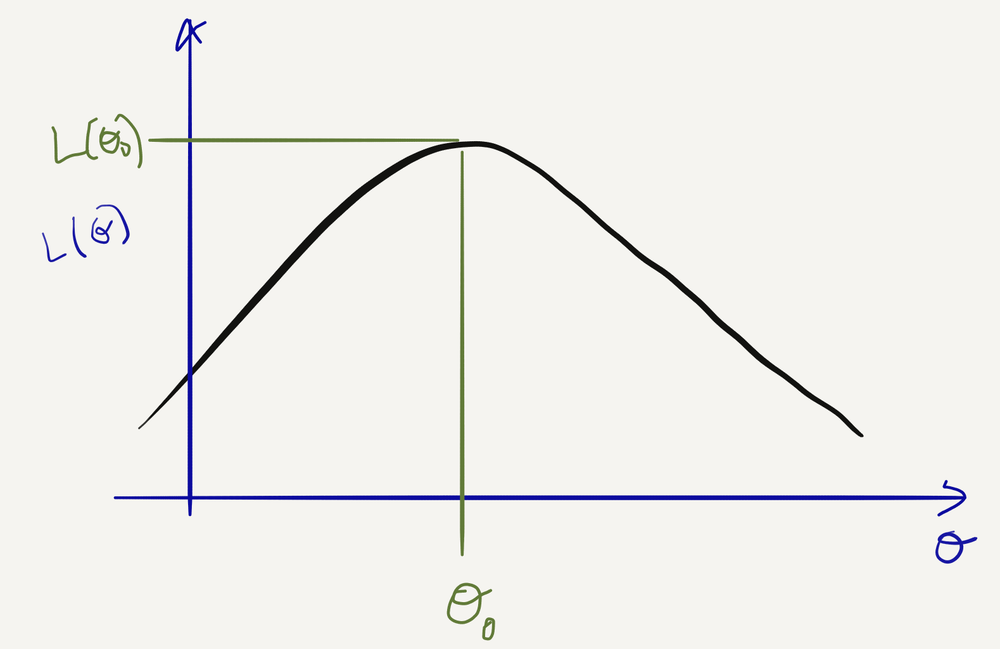

4. Tema 3: Estimació¶
4.1. Estimació per Màxima Versemblança¶
4.1.1. Ajust de distribucions de probabilitat¶
A l’exemple de la primera classe del Tema 3 vem veure un exemple de modelització estadística on partim d’un conjunt de dades que podem modelar com una mostra i.i.d. d’una població:
\(X_i \sim f_X(x;\theta), i=1,\cdots,N\)
on:
\(f_X\) és la f.d.p. d’una família de distribucions i
\(\theta\) són els paràmetres de la mateixa (vector o escalar), també anomenats paràmetres de la població.
El problema d’estimació de paràmetres o d’ajust de la distribució a partir de les dades consisteix en estimar \(\theta\) a partir de \(X_1, \cdots, X_N\).
Normalment se segueix la següent recepta:
Explorar dades (estadístics descriptius, gràfics)
Hipòtesi: Escollir familia (paramètrica) \(f_X(x;\theta)\)
Àjustar paràmetre \(\theta\) segons algun criteri
Comprovar l’hipòtesi: bondat d’ajust (Tema 4)
A la darrera classe vem veure un exemple d’aplicació d’aquesta recepta on el criteri d’ajust era heurístic: visualitzar l’histograma conjuntament amb \(f_X(x;\theta)\) per diversos valors de \(\theta\).

Aquest procés heurístic de prova-i-error és (1) ineficient i (2) difícil de justificar quantitativament
Un altre mètode d’estimació molt versàtil i millor fonamentat és el de Màxima Versemblança.
Per començar, definim la log-versemblança:
on \(f_{X_1, \cdots, X_N}(x_1, \cdots, x_N; \theta)\) és la f.d.p. conjunta de la mostra.
En el cas d’una mostra iid, la log-versemblança es simplifica a:
Per mostres de v.a. discretes, la log-versemblança es calcula a partir de la f.m.p. conjunta \(p_{X_1, \cdots, X_N}(x_1, \cdots, x_N; \theta)\) enlloc de la f.d.c.
Algunes propietats de la log-versemblança:
\(L(\theta; x_1, \cdots, x_N)\) és un funció \(\Theta \times \mathbb{R}^N \to \mathbb{R}\).
Donada una mostra en particular \(X_1=x_1, \cdots, X_N=x_n\), \(L(\theta; x_1, \cdots, x_N)\) és un funció de \(\theta \in \Theta \to \mathbb{R}\).
Com que la mostra és una v.a., \(L(\theta; X_1, \cdots, X_N)\) és una v.a. per cada valor de \(\theta\)!
Com vem veure a la primera classe, aquesta funció es pot interpretar com un criteri de qualitat de \(\theta\) a l’hora d’explicar les dades observades (quan més gran, millor explicades).
Per tant, sembla raonable definir un estimador del(s) paràmetre(s) \(\theta\) com:
Aquest és el que s’anomena Estimador de Màxima Versemblança (EMV) o MLE per les seves sigles en anglès.
4.1.2. Càlcul de l’EMV¶
En alguns casos, l’EMV es pot calcular analíticament, resolent el problema d’optimització associat. Per exemple en una mostra d’una família Gaussiana,
Aquesta funció és diferenciable i concava en \(\mu\) i \(\sigma\), per tant el seu màxim existeix i haurà de verificar la condició d’optimalitat:
Això ens porta a un sistema d’equacions:
d’on podem concloure que l’EMV és:
(noteu que \(\hat{\sigma}\) no és igual que \(S_X^2\)!)
És important tenir en compte que:
No sempre podrem calcular els EMV de manera analítica.
En alguns casos ho podrem calcular numèricament (fent servir el mètode de descens del gradient, o de Newton)
En alguns casos, l’EMV no serà únic (i.e. la log-versemblança tindrà més d’un màxim)
En molts casos la log-versemblança no serà concava, o diferenciable, per tant l’EMV pot ser computacionalment molt difícil de calcular
Malgrat aquestes limitacions, el mètdode de la Màxima Versemblança ens proporciona un mètode bastant genèric per trobar estimadors.
4.1.3. Exemple: EMV d’una multinomial¶
Continuem amb un parell més d’exemples d’aplicació del EMV.
Un model molt útil en estadística és el model multinomial, que s’utilitza quan tenim observacions tabulades, per exemple: un histograma, el nombre de respostes d’un qüestionari per edat de l’entrevistat, l’incidència d’una malaltia per regió geogràfica, etc.
En tots aquests casos, es poden resumir les N observacions d’una mostra en un vector \(X_1, \cdots, X_M\) on \(X_i\) es correspon amb el nombre d’observacions dins la casella \(i\), i hi ha M caselles i \(\sum_i X_i = N\).
Important: Noteu que en aquest cas \(X_i\) no és iid!
El model multinomial suposa que la f.d.m. conjunta de \(X_1, \cdots, X_M\) vé donada per:
on \(p_1, \cdots, p_M\) són els paràmetres de la població, tals que \(\sum_i p_i = 1\), i per construcció \(\sum_i X_i = N\).
A partir d’aquesta f.d.m conjunta, i una mostra \(X_1=x_1, \cdots, X_M=x_m\) podem calcular la log-versemblança:
(on ignorem els termes que no depènen d’\(x_i\) o \(p_i\).)
Com que sabem que \(\sum_i p_i = 1\) , podem imposar la restricció que \(p_M = 1 - \sum_{i=1}^{M-1} p_i\), i tindrem:
Calculant-ne el gradient i igualant-lo a 0 (exercici per casa), podrem concloure que l’EMV d’una multinomial és simplement:
En els exemples que hem vist fins ara (Gaussiana, Multinomial, Poisson..), excepte el model de precipitació a través d’una Gamma, l’EMV es correspon amb l’estimador que hauriem escollit sense saber la teoria de Màxima Versemblança… Val la pena complicar-nos la vida amb aquesta teoria!?
4.1.4. Exemple: EMV amb dades censurades¶
L’EMV és una metodologia molt més potent del que hem vist fins ara. D’na banda, com veurem tot seguit, ens permet estimar paràmetres en casos on l’intuició potser ens fallaria. Per altra banda, com veurem més endavant, els EMVs té unes propietats estadístiques interessants.
Considerem l’exemple següent: Estem interessats en modelar la supervivència d’uns pacients sota un tractament mèdic determinat. Considerem \(X_i\) l’edat en anys de defunció del pacient \(i\). Durant la durada del nostre estudi, alguns dels pacients moriran però alguns altres seguiran vius. Per tant, per aquests últims pacients l’únic que sabrem és que \(X_i \geq e_i\) on \(e_i\) és l’edat del pacient en el moment d’acabar l’estudi.
Per tant necessitem modelar la versemblança d’una mostra mixta d’observacions \(X_i\) i esdeveniments \(X_j \geq e_j\), on aquestes últimes s’anomenen “observacions censurades” (com si algú ens hagués “censurat” les dades, en aquest cas l’univers).
Anomenem \(\mathcal{M}\) el subconjunt de pacients morts (i que per tant dels que hem pogut observar-ne l’edat de defunció) i \(\bar{\mathcal{M}}\) el subconjunt de pacients vius (dels que només sabem q que \(X_i \geq e_i\)).
La funció de log-versemblança que utilitzarem en aquest cas és:
Si la mostra és iid, això es simplificarà a:
on \(p_X(x_i; \theta)\) és la f.m.p. del nostre model d’edat de defunció i \(F_X(e_i; \theta)\) n’és la f.d.c. corresponent.
Suposem que modelem l’edat de defunció dels pacients segons una llei geomètrica:
on \(\rho \in [0, 1]\) és el paràmetre de la població. La f.d.c. és \(F_x(x ;\rho) = 1 - (1 -\rho)^x\) i per tant podem calcular la log-versemblança com:
Exercici: Acabar de calcular \(\hat{\rho} = \arg \max L(\rho)\)
4.2. Propietats asimptòtiques de l’EMV¶
4.2.1. Biaix, Variança, EQM…¶
Recordem que la log-versemblança \(L(\theta; X_1, \cdots, X_N)\) és una v.a. per cada \(\theta\) (i.e. una “funció aleatòria”) i per tant l’EMV \(\hat{\theta}\) també és una v.a.! Per caracteritzar-lo haurem de fer servir les eines que vem desenvolupar al Tema 2:
Biaix: \(b(\hat{\theta}) := E(\hat{\theta} - \theta_0)\)
Variança: \(\mbox{Var}(\hat{\theta}) = E((\hat{\theta} - E(\hat{\theta}))^2)\)
Error Quadràtic Mitjà: \(\mbox{MSE}(\hat{\theta}) = E((\hat{\theta} - \theta_0)^2)\)
La seva f.d.p.: \(f_{\hat{\theta}}(x)\)
IMPORTANT: Tot el que segueix suposa una mostra i.i.d. generada segons un model \(X_i \sim f_X(x;\theta_0); i=1,\cdots,N\), on \(\theta_0\) és el valor real però desconegut del paràmetre a estimar. Per tant totes les esperances que tractem són relatives a aquesta \(f_X(x;\theta_0)\)!
En general l’EMV no tindrà una forma analítica que es presti a calcular-ne el biaix, variança o MSE, i molt menys a caracteritzar-ne la distribució.
La gran avantatge dels EMV és que, asimptòticament, es poden caracteritzar relativament fàcilment. Primer definim què és el que volem dir per “asimptòtic”. Explicitant la dependència de l’EMV amb el tamany de la mostra:
\(\hat{\theta}^N = \arg \max L(\theta; X_1, \cdots, X_N)\)
el que ens interessarà és caracteritzar el biaix, variança i f.d.p de \(\hat{\theta}^N\) a mesura que \(N \to \infty\)
Començarem aquesta caracterització amb el següent resultat, que provarem de manera informal:
Teorema 3.1: Donada una mostra iid, i per \(f(x; \theta)\) prou “suaus”, \(\frac{1}{N}L(\theta; X_1, \cdots, X_N) = \frac{1}{N}\sum_i \log f(X_i; \theta)\) convergeix en probabilitat a \(E(\log f_X(x; \theta))\).
“Demostració”: Resulta de l’aplicació de la LLei Feble dels Grans Nombres que vem veure al Tema 2. Per tant només hauriem de comprovar que podem aplicar-la, és a dir que:
\(E(\log f(X_i; \theta))\) existeix i que
\(\mbox{Var}(\log f(X_i; \theta))\) és finita
que dóna lloc a la condició “prou “suaus”” de la proposició.
4.2.2. Consistència¶
Definició: Un estimador és consistent si, a mesura que el tamany de la mostra augmenta, l’estimador convergeix en probabilitat al paràmetre d’interès:
Teorema 3.2: Sota algunes condicions de regularitat per \(f_X(x; \theta)\), l’EMV és un estimador consistent.
“Demostració”: Pel Teorema 3.1 hem vist que \(\frac{1}{N}L(\theta; X_1, \cdots, X_N) \to E(\log f_X(x; \theta))\) en probabilitat. No podrem demostrar-ho en aquest curs, però sembla raonable esperar que, sota algunes condicions, el \(\hat{\theta}^N\) que maximitza l’expressió de l’esquerra hauria de maximitzar l’expressió de la dreta i viceversa.
Sota aquest supòsit, només ens cal verificar que \(\theta_0\) maximitza \(E(\log f_X(x; \theta))\) per concloure que \(\hat{\theta}^N \to \theta_0\). Fem-ho:
Estem cometent bastants sacrilegis intercanviant l’ordre dels operadors integrals i diferencials sense donar explicacions… però ens haurem de creure que és possible per la majoria de \(f_X\) d’interès.
Noteu que per \(\theta = \theta_0\), aquesta última expressió resulta:
per tant \(\theta = \theta_0\) és tal que \(\frac{\partial}{\partial \theta} E(\log f_X(x; \theta))=0\) i si \(E(\log f_X(x; \theta))\) és concava, n’és un màxim. Amb això podem “concloure” que \(\hat{\theta}^N \to \theta_0\).
4.2.3. Distribució asimptòtica de l’EMV¶
Per ara hem vist que l’EMV té una propietat bona, la consistència: quan el tamany de la mostra augmenta, l’estimador convergeix al valor del paràmetre de la població.
La caracterització asimptòtica de l’EMV no s’acaba aquí: de fet, tot seguit veurem que la distribució de l’EMV és Gaussiana, centrada en el paràmetre d’interès \(\theta_0\) (asimptòticament sense biaix!) i amb una variança que decreix amb N.
Teorema 3.3: Sota algunes condicions de regularitat de \(f_X\), \(\sqrt{N {I}(\theta_0)}(\hat{\theta}^N - \theta_0) \Rightarrow \mathcal{N}(0, 1)\), on \({I}(\theta) = - E\left(\frac{\partial^2}{\partial \theta^2}\log f(X; \theta) \right)\) és la Informació de Fisher.
Abans de donar un esboç de la prova d’aquest resultat, mirem d’entendre’l. Aquest resultat implica:
L’EMV és asimptòticament sense biaix, \(\lim_{N \to \infty} E(\hat{\theta}^N - \theta_0) =0\).
La seva variança asimptòtica és inversament proporcional a N, i per tant l’EMV és consistent
Al límit, i independentment de la distribució de la mostra, l’EMV es comporta com una Gaussiana!
La variança asimptòtica depèn d’aquesta quantitat un pèl esotèrica \({I}(\theta)\)…
Ara comprovarem computacionalment el resultat per un cas en particular, quan \(X \sim \mbox{Poisson}(\lambda_0)\). Tenim que
i per tant:
aleshores: \({I}(\lambda)= - E\left(-\frac{X}{\lambda^2} \right)=\frac{1}{\lambda}\).
Per altra banda, l’EMV d’una mostra iid de Poisson és simplement el moment mostral (Exercici!):
\(\hat{\lambda}^N = \bar{x}\)
Per tant, asimptòticament: \(\hat{\lambda}^N \sim \mathcal{N}(\theta_0, \frac{\lambda_0}{N})\)
N = 100 # Tamany de cada mostra
n = 1000 # Nombre de repeticions
lambda = 15 # Paràmetre de la població
emv_poisson <-rep(0, n)
for (i in 1:n){
sample = rpois(N, lambda)
emv_poisson[i] = mean(sample)
}
x = seq(min(emv_poisson), max(emv_poisson), 0.1)
hist(emv_poisson, 20, freq = F)
lines(x, dnorm(x, lambda, sqrt(lambda/N)), col='green')
{kind=link}
4.2.4. Justificació de la distribució asimptòtica de l’EMV¶
Ara procedirem a justificar el Teorema 3.3, sense arribar a provar-lo, cosa que requeriria tècniques molt més avançades que les d’aquest curs.
Primer de tot, alleugerirem la notació establint, com ja hem fet servir en exemples anteriors:
\(L(\theta) := L( \theta; x_1, \cdots, x_m)\)
Imaginem-nos una \(L(\theta)\) “simpàtica” al voltant de \(\theta_0\):
{kind=link}
Recordeu de càlcul que l’expansió de Taylor de segon ordre d’una funció “suau” \(f(x)\) al voltant d’un punt \(x_0\) és:
Aleshores suposant que \(L'(\theta)\) és “suau”, tindrem que:
i per tant, per \(\hat{\theta}\) que maximitza \(L(\theta)\), haurà de verificar la condició d’optimalitat:
Cosa que ens permet concloure que:
Gràficament:

{kind=link}
Abans de continuar, farem un petit escalat de la darrera equació:
Ara, fixem-nos que en el cas iid, el numerador:
és una suma de v.a. iid (\(\log f_X(x_i;\theta_0)\)) amb mitja 0, per la raó que hem vist en el Teorema 3.1, i variança:
per propietats de la variança de la suma de v.a. iid.
Per continuar, necessitarem un resultat auxiliar:
Lema 3.4: Sota algunes condicions de regularitat de \(f_X\), \(E( \frac{\partial}{\partial \theta} \log f_X(X;\theta))^2 = - E( \frac{\partial^2}{\partial \theta^2} \log f_X(X;\theta)) = I(\theta)\)
Justificació: Com que \(\int f_X(x;\theta)dx = 1\),
Combinant aquest últim resultat amb l’aplicació del TLC, podem concloure que
Per altra banda, pel denominador tenim:
que, per la Llei dels Grans Nombres:
Combinant aquests dos resultats, veiem que
que és el resultat que buscàvem justificar.
Interpretació de la Informació de Fisher (\(I(\theta)\)):
Fixeu-vos que \(L''(\theta_0)\) és asimptòticament proporcional a \(I(\theta)\)
\(L''(\theta_0)\) mesura la corvatura de \(L(\theta)\) al voltant de \(\theta_0\)
Quan més corbatura, menys variança, quan més “plana” més variança.
=> La “forma” de la nostra distribució determina la variança asimptòtica de l’estimador
4.2.5. Eficiència i Cota de Cramer-Rao¶
L’últim concepte teòric que considerarem en aquest tema és el de l’eficiència.
En aquest curs no ho hem vist, però hi ha altres metodologies per obtenir estimadors com el Mètode dels Moments, els estimadors de James-Stein, o els estimadors Bayesians.
Per tant, per un mateix paràmetre, podem trobar-nos amb diferents “receptes” per construir-ne un estimador.
La pregunta que ens ocupa és: Donats diferents estimadors d’un mateix paràmetre, com n’escollim el millor?
La resposta a aquesta pregunta és: “depèn”.
Dependrà del que volguem fer a posteriori amb aquest estimador, però un criteri bastant acceptat és el de comparar-los segons el seu Error Quadràtic Mitjà (denominat MSE per les sigles en anglès), que com sabem es pot descomposar com la suma de la Variança de l’Estimador i del quadrat del seu biaix:
Si ens restringim a estimadors sense biaix, comparar-ne l’MSE és equivalent a comparar-ne les variànces, cosa que dona lloc a la definició d’eficiència:
Un estimador sense biaix és eficient si té menys o igual variança que qualsevol altre estimador
Aquesta definició no és massa constructiva: per trobar l’estimador eficient, hauriem de construïr tots els estimadors possibles (infinits!), calcular-ne la variança, i finalment escollir el que en té menys.
Per sort, un dels resultats més importants de l’estadística, desenvolupat als anys 40 del s. XX per Harald Crámer i C.R. Rao, ens diu:
Teorema 3.5: Sigui \(X_1, \cdots, X_N\) una mostra iid amb \(X \sim f_X(x;\theta_0)\) i \(\tilde{\theta}\) un estimador sense biaix de \(\theta_0\). Aleshores, sota certes condicions de regularitat de \(f_X(x;\theta)\), \(\mbox{Var}(\tilde{\theta}) \geq \frac{1}{N I(\theta_0)}\).
Fixeu-vos-hi que per tant, l’EMV és asimptòticament eficient ja que \(\mbox{Var}(\hat{\theta}) \to \frac{1}{N I(\theta_0)}\).
4.3. Intervals de confiança per EMVs¶
4.3.1. Intervals de confiança¶
Durant el curs ja hem treballat diverses vegades amb Intervals de Confiança, que vam introduïr per primer cop a la Pràctica #2.
Un interval de confiança de nivell \(1-\alpha\) (a la Pràctica #2 parlàvem de nivell \(\alpha\) enlloc de \(1-\alpha\) però aquesta darrera convenció és més comuna) per un paràmetre \(\mu\) és un estadístic (per tant una v.a. que és una funció de la mostra) format per dos nombres \(L\) i \(U\) tals que:
És important entendre que la quantitat aleatòria aquí és el conjunt \([L, U]\) i no \(\mu\). L’interpretació d’aquesta probabilitat és que, si agaféssim M mostres (cada una de tamany N) i calculéssim M intervals (un per cada mostra), hauriem d’esperar que una fracció \(1 - \alpha\) dels mateixos contenen \(\mu\).
4.3.2. Intervals exactes¶
En alguns casos específics, podrem calcular I.C’s de manera “exacta”, és a dir, calculant la f.d.p. \(f_{\hat{\theta}}\) de l’estimador del paràmetre d’interès, i utilitzant-la per calcular un I.C.
Aquest és el cas, per exemple, de l’EMV de la mitja i variança d’una mostra Gaussiana, on, com vam veure a la Pràctica 2:
ja que l’EMV per la mitja i variança Gaussiana és \(\hat{\mu}=\bar{x}\) i \(\hat{\sigma}^2 = \frac{N-1}{N}S_X^2\). Per altra banda, un dels resultats que vam veure al Tema 2 és que:
Podem fer servir aquests dos resultats per calcular IC’s per \(\hat{\mu}, \hat{\sigma}\) com segueix:
1) Com que la distribució \(t_{N-1}\) és simètrica al voltant de 0, i denotant per \(\phi_t(x)\) la seva f.d.c. inversa, tindrem que:
d’aquí podem concloure que l’interval de confiança de nivell \(1 - \alpha\) per \(\mu\) és:
Noteu la similitud i les diferències respecte l’interval de confiança que obtindriem pel TLC.
Per altra banda com que
i denotant per \(\phi_{\chi_{N-1}^2}(x)\) la f.d.c. inversa d’una \(\chi_{N-1}^2\), tindrem:
i per tant, l’IC de nivell \(1-\alpha\):
que com podeu observar no és simètric com en el cas anterior.
4.3.3. Intervals aproximats asimptòtics¶
En general serà difícil caracteritzar la f.d.p. dels nostres estimadors, i per tant haurem de recórrer a aproximacions, com la que vam veure en la teoria asimptòtica de l’EMV (Teorema 3.3 d’aquestes diapos):
on \(I(\theta)\) és la Informació de Fisher. Si sapiguéssim el valor de \(\theta_0\), podriem fer servir el desenvolupament que ja hem fet servir múltiples vegades per trobar un IC de nivell \(1 - \alpha\). Per N suficientment gran:
on \(\phi(x)\) és la f.d.c. inversa (funció de quantils) d’una normal estàndard.
Per tant, sabent que \(\phi\left(1 - \frac{\alpha}{2}\right)= - \phi\left(\frac{\alpha}{2}\right)\),
cosa que justificaria el següent IC aproximat per l’EMV d’una mostra iid d’una població \(f_X(x;\theta)\):
on \(\phi\) és la f.d.c. inversa d’una Normal estàndard i \(I(\theta)\) és la Informació de Fisher.
Com que no coneixem \(\theta_0\), aquesta última expressió és inútil ja que depèn de \(I(\theta_0)\).
Farem doncs servir el principi de substitució (plug-in principle), que ja hem fet servir altres vegades, i substituïrem \(I(\theta_0)\) per \(I(\hat{\theta})\), sota el precepte de que per N suficientment gran \(\hat{\theta} \to \theta_0\).
Per tant arribem a:
Fixeu-vos en la similitud/diferències entre aquesta expressió i els Intervals de Confiança obtinguts en el cas on podíem derivar intervals de confiança exactes.
4.3.4. Unes notes sobre el càlcul de \(I(\hat{\theta})\)¶
A l’última entrega de problemes, he vist que hi havia una mica de confusió respecte el càlcul de la Informació de Fisher \(I(\theta)\).
En molts casos, podrem calcular \(I(\theta)\) analíticament, a través d’una de les seves dues definicions alternatives:
(Podem escollir la que ens vagi millor per al problema.) Fixeu-vos que la v.a. aleatòria de la que volem calcular l’esperança aquí és una funció de \(\log f_X(X;\theta)\) (la seva derivada al quadrat o la seva segona derivada), que a la vegada és una funció de \(X\). L’esperança, per tant, es calcula respecte a \(X \sim f_X\).
En alguns casos, calcular aquesta esperança serà massa difícil (com per exemple a l’Exercici 2 de l’entrega de Problemes), i haurem de calcular-la de manera aproximada. És aquí on podem recórrer de nou a la Llei dels Grans Nombres, que ens diu que per qualsevol funció \(g(x)\) d’una variable aleatòria \(Y\), i sota algunes condicions de regularitat,
quan \(N \to \infty\). Per tant, si tenim una mostra gran de \(X \sim f_X\) (o si la podem simular), podrem aproximar:
Fixeu-vos que aquesta última expressió dóna lloc a l’aproximació que veu trobar alguns per Internet:
quan la mostra és iid, on simplement hem aplicat la definició de \(L(\theta)\) i intercanviat l’ordre de l’operador suma i derivada.
4.3.5. Intervals aproximats per Bootstrap¶
L’última tècnica que veurem per calcular Intervals de Confiança és la més potent, ja que no requereix cap suposició pel que fa a la distribució de la mostra, i funciona en el règim no-asimptòtic.
Fixeu-vos que en el desenvolupament anterior ens hem basat (implícitament) en que coneixiem la distribució de:
Si coneixem \(f_{\Lambda}\), vol dir que també coneixem la seva f.d.c. inversa, \(\phi_{\Lambda}\) i per tant podem trobar Intervals de Confiança ja que:
En el cas asimptòtic que hem vist abans, teniem que \(\Lambda \approx \mathcal{N}\left(0, \frac{1}{N I(\hat{\theta})}\right)\).
En general, no coneixem \(f_{\Lambda}(x;\theta_0)\) i per tant ens quedem encallats.
El mètode de Bootstrap paramètric, el que proposa és:
Generar una mostra Bootstrap de talla M: \(\Lambda_i \sim f_{\Lambda}(x;\hat{\theta}), i=1, \cdots, M\) (fixeu-vos que hem remplaçat \(\theta_0\) per \(\hat{\theta}\))
Estimar \(\phi_{\Lambda}\left(\frac{\alpha}{2}\right)\) i \(\phi_{\Lambda}\left(1 - \frac{\alpha}{2}\right)\) a partir dels quantils de la mostra \(\Lambda_1, \cdots, \Lambda_M\)
per trobar un interval de confiança aproximat:
Ens queda aclarir com generar \(\Lambda_i \sim f_{\Lambda}(x;\hat{\theta})\)…
Per generar \(\Lambda \sim f_{\Lambda}(x;\hat{\theta})\), ho farem de manera indirecta, ja que com hem dit en general no coneixem \(f_{\Lambda}\). El que sí que coneixem, en principi, és \(f_X(x;\theta)\), la f.d.p. o f.m.p de la nostra mostra.
Per tant generarem \(\Lambda\) indirectament. Per fer-ho, repetirem \(M\) vegades el següent procés:
1. Generar una mostra bootstrap de \(X \sim f_X(x;\hat{\theta})\) de talla N, segons el valor \(\hat{\theta}\) que hem trobat a partir de les nostres dades.
Calcularem l’EMV sobre aquesta mostra bootstrap, i l’anomenarem \(\hat{\theta}^*\)
Calcularem \(\Lambda = \hat{\theta}^* - \hat{\theta}\)
Al final d’aquest procés haurem obtingut la mostra Bootstrap de \(\Lambda\) i podrem calcular-ne els quantils, per calcular l’IC aproximat que en vist en l’anterior diapo.